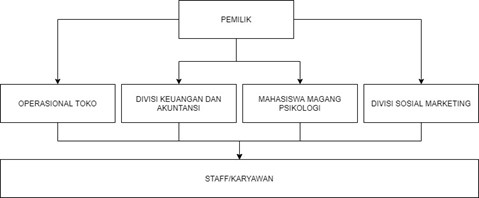

Sejarah Terciptanya Break and Heal
Daerah Yogyakarta sendiri ada lebih dari 30 lembaga layanan konseling yang ada di Yogyakarta.
Banyak dari layanan ini yang memberikan tarif yang relatif mahal dibandingkan dengan layanan konseling kami.
Banyak dari layanan konseling tersebut telah mematok harga di kisaran harga Rp. 200.000 untuk tiap 1x sesi konseling.
Dan dikenakan biaya tambahan jika meminta tambahan waktu konseling.
Jika dibandingkan dengan layanan konseling secara online kita tidak memiliki interaksi sosial secara langsung.
Sehingga, bisa saja makna yang diberikan dan di tangkap oleh pengguna bisa saja berbeda. Saat seseorang mengalami masalah,
lebih baik diceritakan secara langsung daripada secara online.
Karena jika diceritakan secara online kita tidak tau ekspresi maupun intonasi yang didengar maupun di tangkap.
Seringkali banyak terjadi kesalahpahaman saat membaca setiap kalimat yang diberikan pada sesi layanan konseling online tersebut.
Hal ini juga memang dialami oleh kami yang menggunakan layanan konseling online tersebut.
Pada saat ini, kami melihat bahwa ada banyak faktor yang mempengaruhi individu, terutama mahasiswa.
Mereka tidak dapat mengekspresikan emosi dan berbicara tentang masalah yang mereka hadapi tanpa adanya kebebasan.
Sehingga Break & Heal hadir untuk menyediakan solusi dan saran yang logis dan bermanfaat dengan tujuan membantu mereka berdasarkan permasalahan yang mereka hadapi.
Sehingga kami berharap bisnis ini dapat membantu mengurangi angka bunuh diri dan masalah kesehatan mental di kalangan mahasiswa.
Struktur Break and Heal

-
Pendiri bisnis ( Pemilik ) sebagai orang yang mendirikan bisnis ini yang akan bertanggung jawab dan mengurus seluruh jalannya bisnis
-
Divisi Keuangan dan Akuntansi sebagai divisi yang akan bertanggung jawab atas seluruh kendali keuangan serta mengelola pemasukan dan pengeluaran
-
Divisi Sosial Marketing sebagai divisi yang akan bertanggung jawab atas promosi bisnis serta menarik perhatian pelanggan untuk berkunjung
-
Operasional Toko ( Store Operation ) sebagai divisi yang akan bertanggung jawab atas seluruh pengelolaan sehari-hari yang terjadi di dalam kantor
-
Mahasiswa Magang Psikologi
Deskripsi Jasa
Pelayanan yang kami berikan adalah dalam bentuk layanan konseling dan penghancuran barang bekas.
Kami menggunakan barang-barang bekas yang tidak lagi terpakai untuk dihancurkan menggunakan alat-alat penghancur yang akan disertai dengan Alat Pelindung Diri (APD).
Barang-barang bekas ini akan kami cari/ambil dari situs website yang menjual barang bekas.
Selain itu, barang-barang ini akan bisa didapatkan di beberapa pasar yang ada di Jogja seperti Pasar Klithikan dan beberapa tempat pengepul barang bekas lainnya yang biasanya menjual barang-barang bekas dengan murah.
Selain menyediakan tempat mengekspresikan emosi, tempat ini juga akan menyediakan beberapa spot yang akan dibantu oleh beberapa teman magang dari psikologi
yang akan membantu untuk menjadi teman bicara bagi pelanggan yang akan berkunjung.
Teman-teman psikologi yang bertugas akan membantu untuk menyediakan solusi dan saran yang logis dan bermanfaat bagi pelanggan,
dengan tujuan untuk membantu mereka menemukan jalan keluar dari permasalahan yang mereka hadapi. Dalam sesi ini, pelanggan tidak
akan mendapatkan diagnosa secara profesional maupun obat secara langsung. Sesi ini hanya akan menjadi sekedar tempat untuk berbagi cerita dan berbagi rasa keluh kesah
yang dimiliki oleh setiap pelanggan.